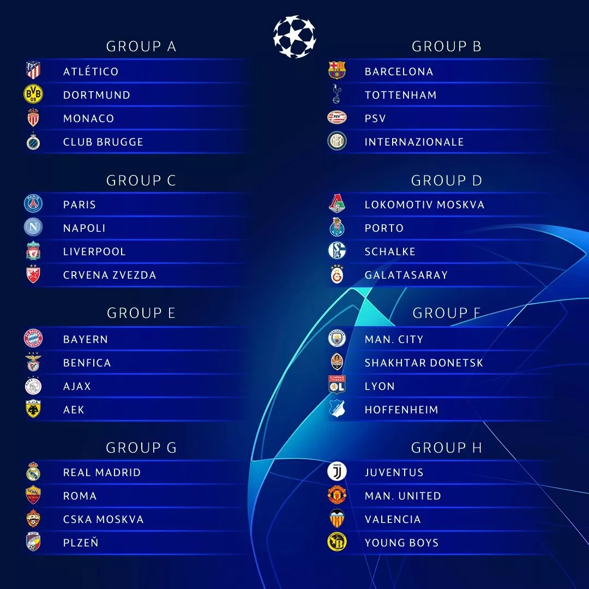
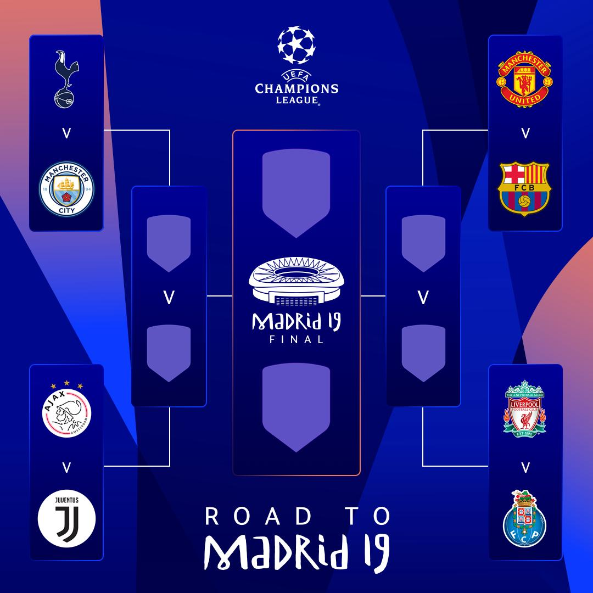
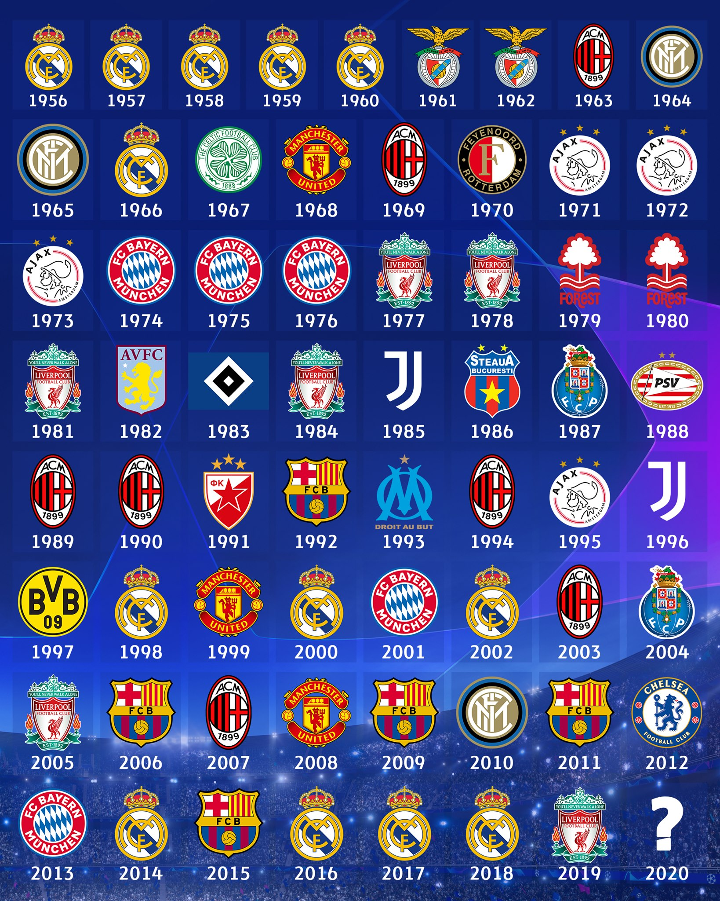
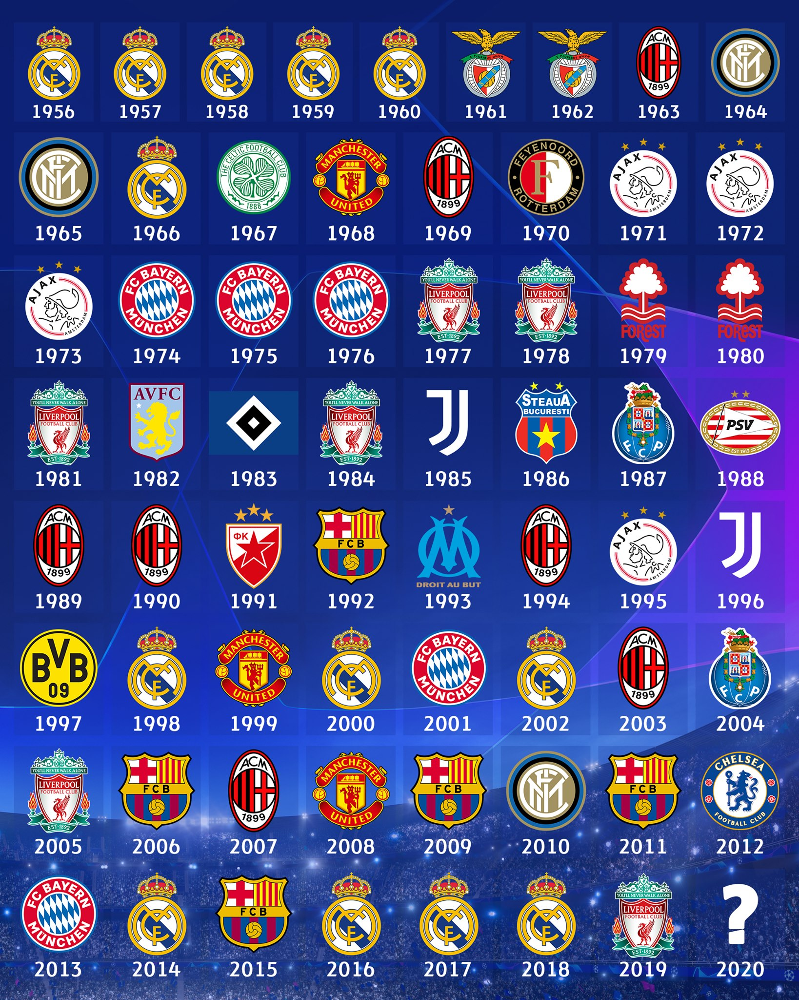

Voetbal123
Er zijn ook Europese competities, waar teams uit verschillende landen in Europa tegen elkaar spelen voor de Champions League beker. De Champions League begint met de poule-fase, waar er 8 poules zijn met 4 teams per poule. Elk team speelt 2 keer tegen de andere teams in de poule, de poule fase bestaat dus uit 6 wedstrijden per team. Als een team wint krijgt het team 3 punten en bij gelijkspel beide teams 1 punt. Na de poule-fase veranderd het in een knock-out toernooi dat bestaat uit 4 rondes, de 'round of 16', de kwartfinale, de halve finale en dan ten slotte de finale. De Champions League word bijna altijd gewonnen door een team uit de top-5 leagues, omdat daar simpelweg de beste teams en spelers spelen.
  
